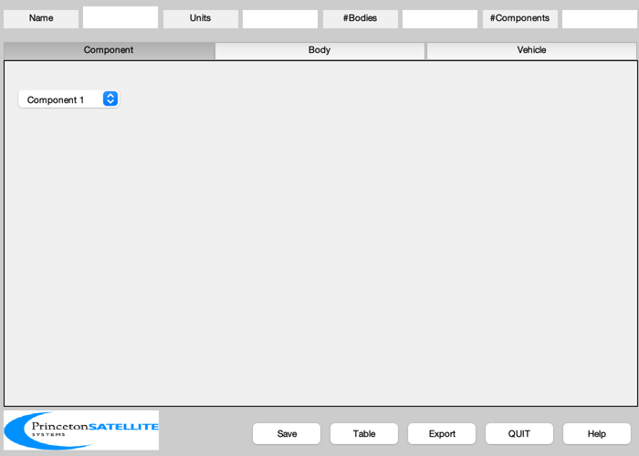
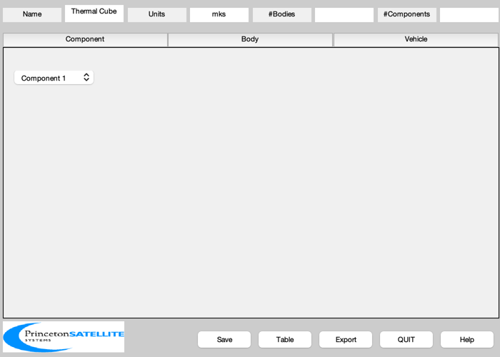
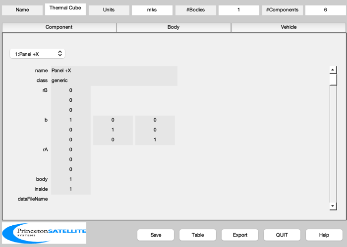

Create a simple satellite with 6 panels for thermal analysis.
Saves the data to ThermalCube.mat, a version of which is used by DrawThermalPlugIn when called as a demo. ------------------------------------------------------------------------ See also BuildCADModel, CreateComponent, Box, SaveStructure ------------------------------------------------------------------------
Contents
%------------------------------------------------------------------------------- % Copyright (c) 2004, 2015 Princeton Satellite Systems, Inc. % All rights reserved. %-------------------------------------------------------------------------------
Initialize
%----------- BuildCADModel( 'initialize' );
Add spacecraft properties
%-------------------------- BuildCADModel( 'set name' , 'Thermal Cube' ); BuildCADModel( 'set units', 'mks' );
Core
%----- m = []; % Just in case it was used in the workspace m.name = 'Core'; m.rHinge = [0;0;0]; m.bHinge.b = eye(3); m.previousBody = []; BuildCADModel('add body', m );
This creates the connections between the bodies
%------------------------------------------------ BuildCADModel( 'compute paths' ); name = {'+X' '-X' '+Y' '-Y' '+Z' '-Z'}; [v, f] = Box( 1, 1, 1 ); % The spacecraft consists of 6 faces %----------------------------------- for k = 1:6 m = CreateComponent( 'make', 'generic', 'vertex', v, 'face', f([2*k-1;2*k],:),... 'faceColor', 'gold foil', 'rA',[0;0;0], 'mass', 10,... 'name', ['Panel ' name{k}], 'body', 1 ); BuildCADModel( 'add component', m ); end g = BuildCADModel( 'get cad model' ); g.thermalNet.b = eye(6); % External flux is added later g.thermalNet.l = zeros(6,6); % External radiation is added in the analysis tool
Conduction to nearest neighbor
%------------------------------- g.thermalNet.k = [ 1 0 -1 -1 -1 -1;... 0 1 -1 -1 -1 -1;... -1 -1 1 0 -1 -1;... -1 -1 0 1 -1 -1;... -1 -1 -1 -1 1 0;... -1 -1 -1 -1 0 1]*0.2; thermalPath = fileparts( mfilename('fullpath') ); if 0 % resave the mat-file SaveStructure( g, fullfile(thermalPath,'ThermalCube') ); end %--------------------------------------